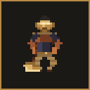

倒塔 DOWNSPIRE · 加载中
试玩版：单人、本机合作和对抗；可以添加执行器（规则 AI）当队友或对手。没有联机，也没有大模型 Agent。
WASD 移动 · 左键 轻击 · 右键 重击 · 空格 闪避 · Shift 武技 · Q / E 技能 · R 种族技
F 互动 · 1 药水 · Tab 地图 · I 背包 · Esc 菜单 · M 静音 · F11 全屏 · 也可以用手柄
Chrome / Edge / Firefox 桌面版 · 存档留在这个浏览器里